Next: Other Vector Methods Up: Vectors Previous: Creating a Vector Contents
The Vector class also provides the resizable-array implementations of the List interface (similar to the ArrayList class). Some of the Vector methods are:
Add Elements to Vector
For example,
Output
![\begin{lstlisting}
Vector: [Dog, Horse, Cat]
New Vector: [Crocodile, Dog, Horse, Cat]
\end{lstlisting}](img243.svg)
Access Vector Elements
For example,
Output

Remove Vector Elements
For example,
Output